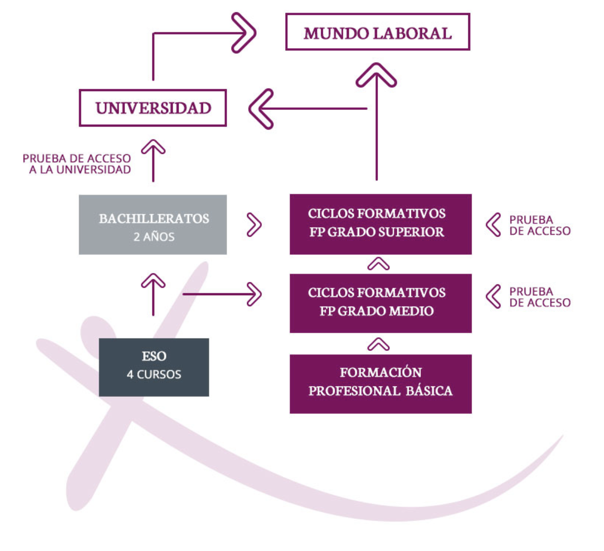

En mayo de 2012 nace EGIBIDE como resultado de la unión de Diocesanas y Jesús Obrero con el objetivo de mantener
su tradición v vocación de provecto socio-educativo de inspiración cristiana. 450 educadores forman a mas de 7.000
alumnos y alumnas empezando desde los 12 años de edad en adelante (Secundaria), pasando por el Bachillerato hacia la
Formación Profesional en 13 áreas distintas y terminando en la Formación Continua a lo largo de la vida y la formación
ocupacional.
La oferta educativa de Egibide puede resumirse en la siguiente imagen
Para más detalles haz click en este enlace
Estos son los 5 campus que componen Egibide y su número de estudiantes y educadores
Estos son los patos de contacto de cada uno de los centros
| Centro | Dirección | Teléfono | |
|---|---|---|---|
| Arriaga | C/Pozoa s/n(01013) | 945 010 110 | arriaga@egibide.org |
| Jesús Obrero | C/Francia,32 (01002) | 945 000 333 | jesusobrero@egibide.org |
| Molinuevo | C/Pozoa s/n(01013) | 945 010 110 | molinuevo@egibide.org |
| Nieves Cano | C/Pozoa s/n(01013) | 945 010 110 | nievescano@egibide.org |
| Mendizorrotza | C/Pozoa s/n(01013) | 945 010 110 | mendizorrotza@egibide.org |